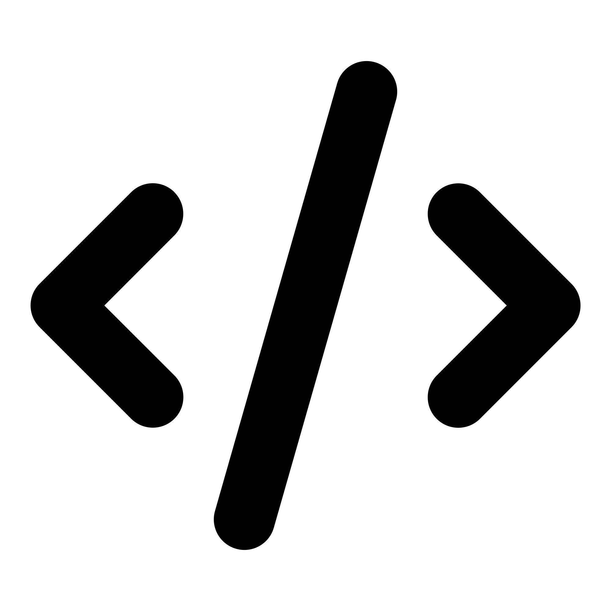
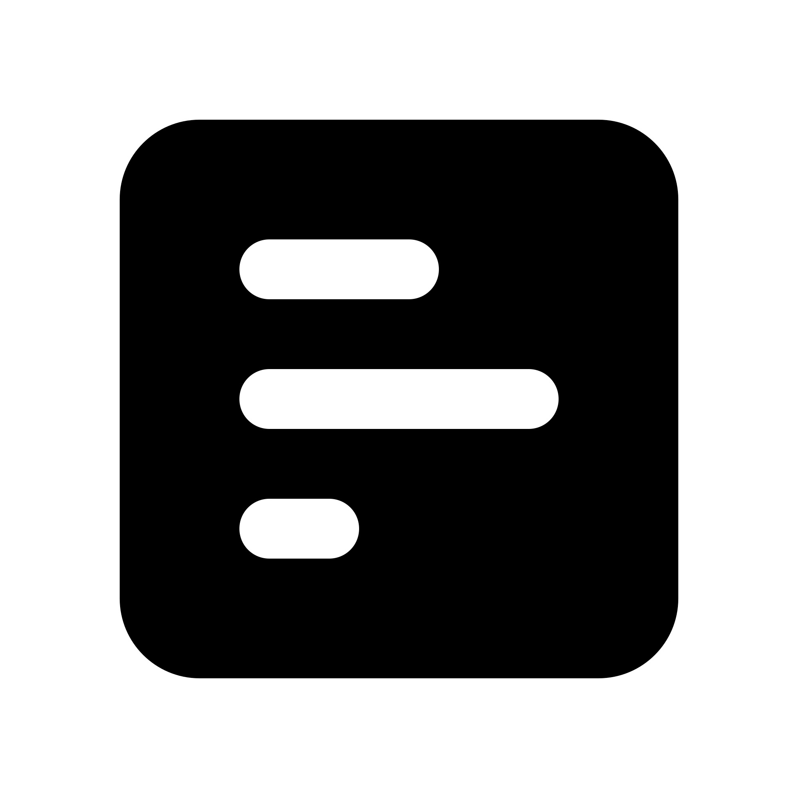

Projet 1 : Portfolio 🍀
Mon site web personnel réalisé en HTML pour présenter mes projets, compétences et parcours.
Technologies utilisées : HTML, CSS, GitHub Pages.
Projet 2 : Azul ⚜️
Un essai de création de jeu Azul avec graphiques réalisé en Python avec Pygame
Technologies utilisées : Python.
Projet 3 : Morpion (Tic Tac Toe) 👾

Jeu du morpion permettant à deux joueurs de s’affronter sur le même écran.
Technologies utilisées : HTML, CSS, JavaScript.
Projet 4 : Motus 🔠
Jeu inspiré de “Motus”, réalisé en Python avec interface graphique PyQt5.
Technologies utilisées : Python, PyQt5.
Projet 5 : Weather App 🌦️

Application graphique développée avec Python et PyQt5 pour afficher la météo d’une ville en temps réel.
Technologies utilisées : Python, PyQt5, API météo (OpenWeatherMap).
Projet 6 : StudyMate 🌐
Application pour aider les étudiants à organiser leurs révisions avec rappels et suivi des progrès.
Technologies utilisées : JavaScript, HTML, CSS, MySQL, PHP.